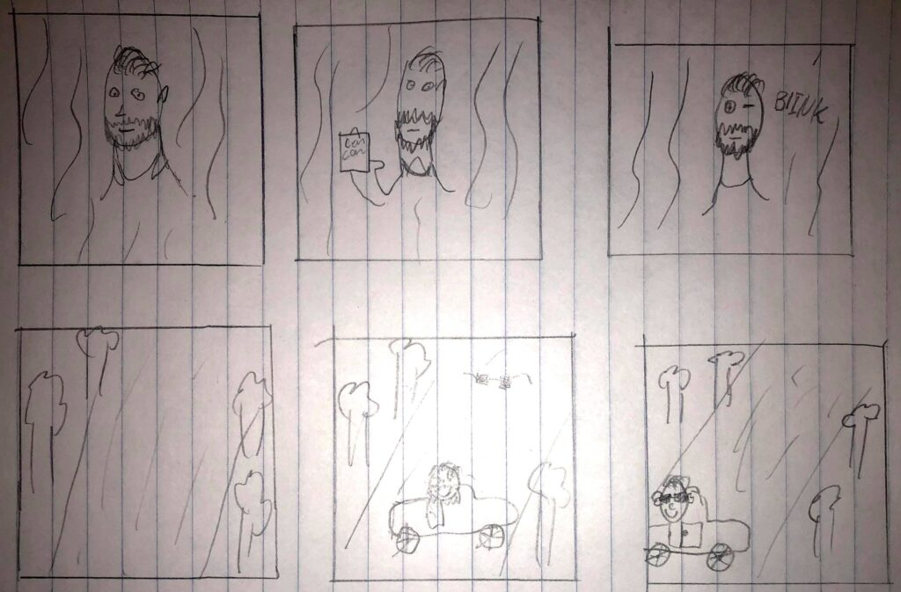

Christoffer Grønlund Svendsen
MovingArt Workshop
Opgave
Opgaven var at lave en Animation i Animate
Værktøjer
- - Animate
- - Photoshop
- - Papir
Processen
Maleriet jeg har valgt, er et selvportræt af den hollandske maler Vincent Van Gogh fra 1889, ved navn Portrait de l’artiste. Dette selvportræt siges at være Van Gogh’s sidste selvportræt inden han døde d. 29. juli 1890. Vincent Van Gogh led af manidepressiv psykose, men det afholdte ham ikke fra at male billeder hvor han viser sig som en med total selvkontrol og en der mester at sammensætte farverne perfekt i billederne. Jeg valgte dette specifikke billede, for at prøve at bygge lidt videre på hans egen fortælling om at han er i total selvkontrol. Det er fortællingen om at han er ligeglad med hvad andre synes.

I processen startede jeg med at lave et storyboard der kort kunne fortælle hvad der skulle ske i animationen. Derefter har jeg brugt Adobe Animate og Photoshop til at lave animationen. I photoshop er det hovedsaligt importeret billeder der er blevet beskåret, så de kunne bruges i Animate. I Animate har jeg brugt Motion Tween funktionen til at bevæge hånden i første scene og til at bevæge bilen, samt dækkene og brillerne i anden scene. Dækkene på bilen har jeg både brugt Motion Tween og et Motion Tween element ved navn Rotate, til at få dækkene til at køre rundt, så det ligner at bilen faktisk kører.
Storyboard
Animation
Historien er at Van Gogh langsomt viser en specifik finger og blinker. Derefter kommer han kørende i en bil i en skov, smiler til omverdenen og der kommer et par solbriller ned fra himlen, som han så får på. Derefter kører han ud af billedet. Symbolikken er i animationen er at Van Gogh er i selvkontrol og at han lidt gør hvad der passer ham. Det færdiggjorde resultat kan ses her.
Reflektion
I denne opgave lærte vi at lave en animation i Adobe Animate. Opgaven var udfordrende, men samtidig spændende og lærerig